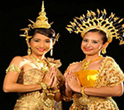

中国礼仪
中国的礼节与仪式。中国古代有五礼之说，祭祀之事为吉礼，冠婚之事为喜礼，宾客之事为宾礼，军旅之事为军礼，丧葬之事为凶礼。民俗界认为礼仪包括生、冠、婚、丧4种人生礼仪。实际上礼仪可分为政治与生活两大部类。政治类包括祭天、祭地、宗庙之祭，祀先师、先王、圣贤；乡饮、相见礼、军礼等。生活类包括五祀、高禖之祀、傩仪、诞生礼、冠礼、饮食礼仪、馈赠礼仪等

泰国礼仪
泰国民族热情和礼貌的性格早已闻名于世，相信来泰国的人们都 曾得到泰国人民的热情友好、好客有礼的招待。尽管泰国人看来很腼腆，实际上他们很容易与陌生人融洽相处，而且总是脸带笑容，故泰国有"微笑国度"之美称。